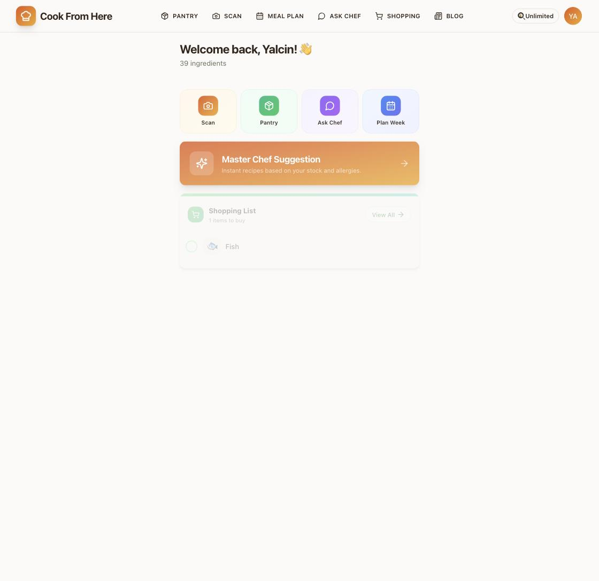
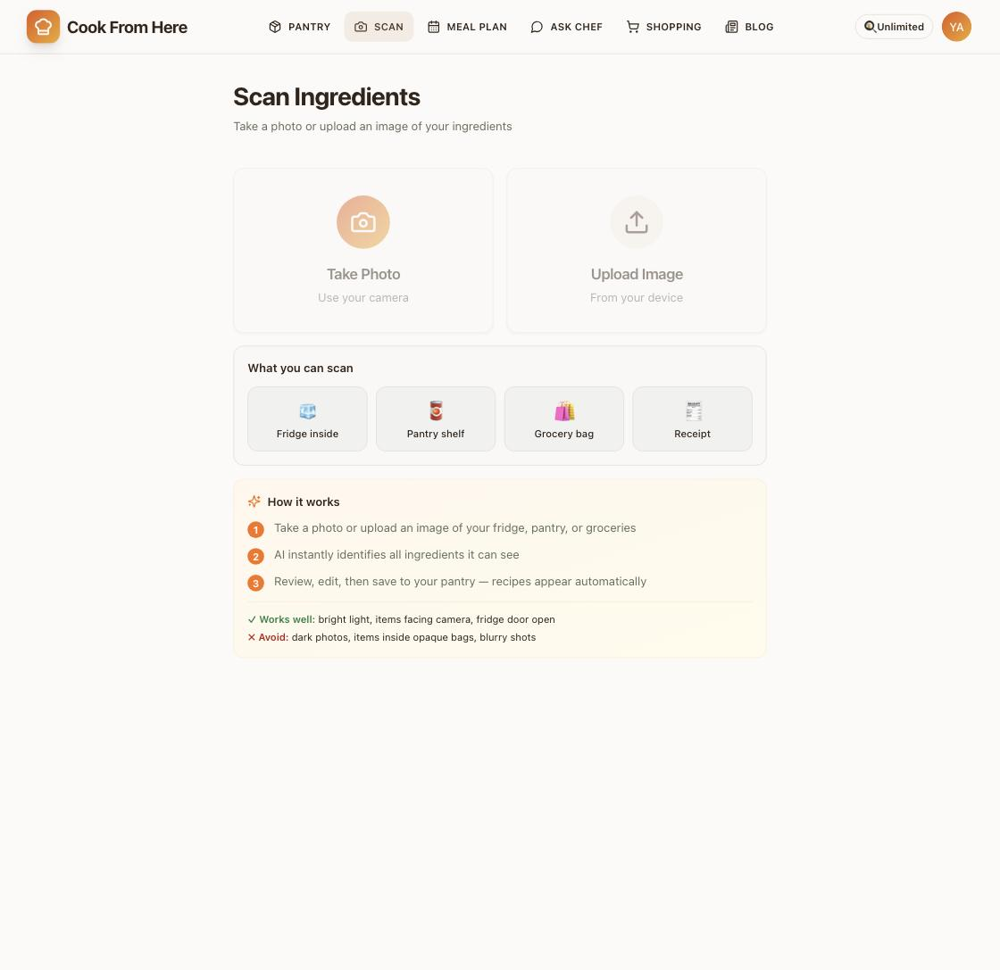
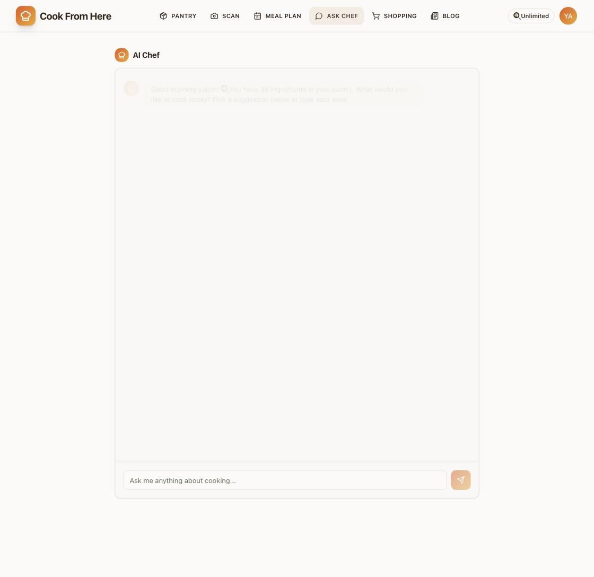
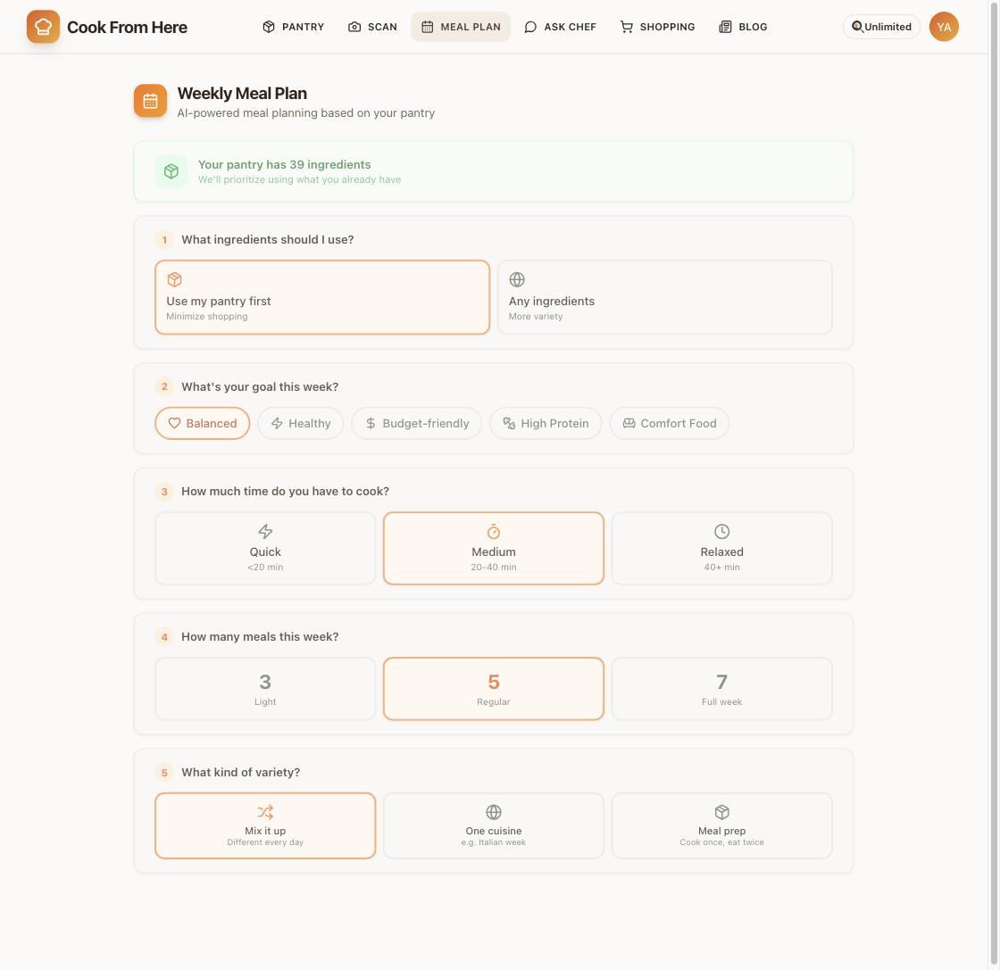

Point your camera at the fridge. Get dinner. A live AI product I designed, built and shipped on my own.

People throw away food they forgot they had, then order takeaway. Every recipe app asks what you want to cook. The useful question is what you can cook, right now, with what's already in the fridge.
Photo → Gemini Vision identifies the items → recipes filtered by what's actually in the pantry, and by allergies.


Vision models misread blurry shelves and opaque packaging. Instead of hiding that, the scan screen teaches good input before the photo is taken, and every result stays editable afterwards. The AI proposes, the user confirms.
No free-text fields, no blank canvas. Every input is a choice between three or four options, so the plan is generated in under thirty seconds.

A new user with an empty pantry sees an empty product. The first-run experience is the next thing I'm rebuilding, starting with a guided first scan instead of a dashboard.
It's live, go break it
Free to start, no card needed.